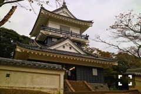
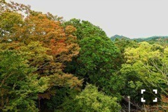

| 2016/11 03 Thu | 斎藤ちはる 写真展は密かな夢。 |
ちはるーむへようこそ。
愛未と写真を撮っていたら...
愛未のルージュが！
ちょびっと付きました。笑
私と愛未の距離感は普段から近いです。
密着度高め。
-------------------------♡
#chihashot
昨日の町並みの景色を撮った、
お城へ向かう途中の写真。
正解のお城は、ここです！
小田原城が多かったのですが...

千葉にある、久留里城でした！
初めて行ったのですが、
お城は言わずもがな素敵でしたが
資料館がとても良かった。
本物の甲冑や刀、当時の絵や写真など、
沢山の資料が置いてありました。
満足感たっぷりなのに、
なんと入館料無料...！
逆に申し訳なくなりました(> <)
別冊カドカワで戦国についての
連載をさせてもらっているので
せっかくならもっと素敵な連載にしたいし、
もっともっと沢山の事を学びたいと思います。
知識が増えると嬉しい！
頑張ります◎
久留里城では天守閣に登れたので、
そこからの景色も！

紅葉になりかけの木々たち。
風情がありました。
昨日のコメントを見ていると
「写真展開いて！」という声が
とても多くてびっくりヽ(；；)丿
嬉しいです...！
密かに夢でもあるので、
いつか写真展や個展が開けるといいなあ。
その為には今から沢山写真撮らないと！
気が早いかもしれないけど、笑
いつか本当に叶いますように。
-------------------------♡
♬ ChihaMusic
「murasaki」KEYTALKさん
赤と青という歌詞が出てくるので
勝手に親近感が。
でもそれ以上にいい歌でいい歌詞。
寂しくて、儚くて、
どうにもならないような気持ちを
美しく表現している。
"あくる日もああ来る日も
夜風に揺られて
変わらず癒えないままなら
お気楽じゃないな"
誰にも悩む時はあって、
その苦しくてもどかしい気持ちが
すうっと私の心に入ってくる。
「ブランコ」のMV、
期間限定でフルバージョンが
公開されています！
↑のURLから見れるので
是非見て見てください！
私的にアンダーMVの中で
一番に好きなMVかもしれないです。
色合いとか構図が素敵！！
おやすみ〜
斎藤ちはる